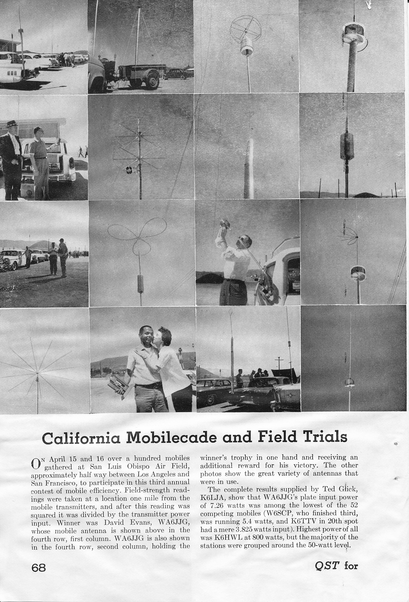
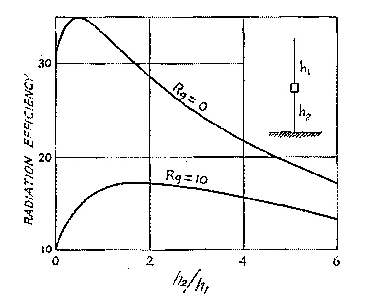
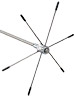
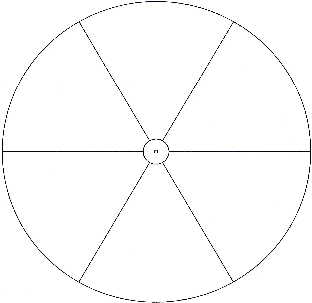
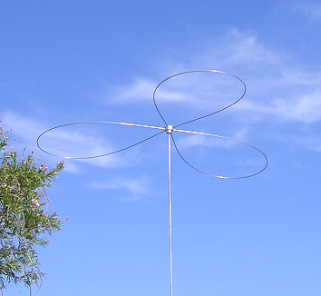
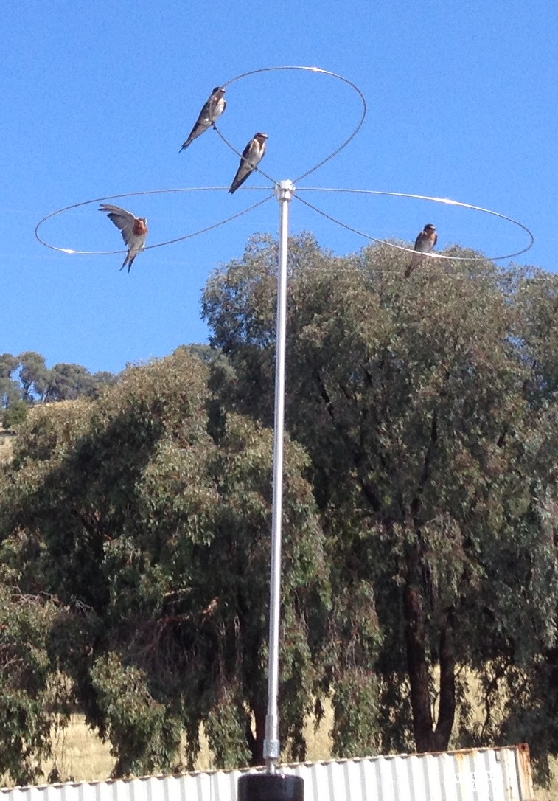

Basics
Cap hats are not new innovations, and have been used in one form or another almost since the dawn of radio. The first patent covering them (US Patent #609,154) was issued to Sir Oliver Joseph Lodge, a British physicist, in 1898. His abstract reads in part: "...As charged surfaces... I prefer, for the purpose of combining low resistance with great electrostatic capacity, cones or triangles or other such diverging surfaces with the vertices adjoining and their larger areas spreading out into space..."
The reason he chose that design was to reduce the Q of the antenna system, thus increasing its bandwidth. Based on his patent comments, he also realized that the input impedance would increase and the overall length at resonance would decrease. This is exactly what cap hats do — if installed correctly.

Based on photos appearing in QST, cap hats atop HF mobile antennas date to the early 1930s. Then, in 1954, the ARRL published their first Mobile Manual — a compilation of mobile articles from QST. Several cap hat examples were included, but unfortunately they were shown incorrectly installed directly atop the coil. The position of the cap hat within the antenna's length is critical, and the early ARRL photos propagated an error that has caused confusion ever since.
The radiation resistance of a vertical antenna is a function of its electrical length and how the current flows over that length. In a mobile scenario, we can't increase the overall height beyond about 13 feet (about 11 feet of physical length in most locations). We can't significantly reduce the ground losses — bonding notwithstanding. Thus the only practical way to increase efficiency, besides reducing ohmic losses (coil Q), is to increase the radiation resistance.

A center-loaded antenna doubles radiation resistance compared to a base-loaded one, which doubles efficiency — but at the cost of additional coil losses because center loading approximately doubles the required reactance for resonance. Moving the coil higher than center increases Q losses faster than it increases radiation resistance. A cap hat solves this problem more elegantly.
Generally speaking, the more capacitance above the loading coil, the higher the radiation resistance. However, cap hats increase wind loading and bending moment stresses significantly more than a whip. Just like coil position, there is a physical and practical limit that must be weighed against the increase in efficiency. A cap hat that is too large relative to the wavelength will begin to radiate, reducing efficiency rather than improving it. The three-loop design described below represents a near-optimal balance of all these factors.

Design Considerations
Cap hats come in a variety of designs, but some perform better than others. A spoke design — straight wires radiating from a hub without an enclosing rim — does not work nearly as well as designs with an enclosing rim. For a given overall diameter, the outer rim nearly doubles the effective capacitance. This has to be weighed against the slightly increased wind loading and a greater chance of the cap hat catching on an errant tree limb.
Side-by-side photo of spoke-design cap hat (no enclosing rim) versus loop-design cap hat (conductive rim connecting wire tips). Same overall diameter, clearly showing the difference in construction between the two types.
Original photo not recoverable from PDF extractionThere is a practical limit to maximum diameter, and a limit to the length of the mast supporting the cap hat. Too short a mast, and there will be excessive capacitive loading between the cap hat and the body of the vehicle. Too long, and even the sturdiest of antennas will fail due to the excessive bending moment caused by wind loading.
Weight is another important factor. One commercial design weighs in at just over 6 pounds. The antenna must hold it up weight-wise, and also withstand the bending moment of acceleration, deceleration, and wind loading.
The position of the cap hat within the antenna's length is absolutely critical. For maximum efficiency, the cap hat must be placed at the very top of the antenna. Cap hats mounted atop the coil will indeed increase bandwidth, but at the expense of drastically reduced efficiency. Nothing should be mounted above the cap hat.


If all the factors above are considered, the three-loop design offers the best overall performance. In the specific case illustrated, the mast is 4 feet in length and the loops are 72 inches long, giving an effective diameter of approximately 5 feet. Mounted atop a Scorpion 680, the antenna can be tuned from 80 through 17 meters.
Four loops could be used, but this increases wind loading by 1/3 with only a very small increase in effectiveness. A longer mast isn't viable because it would place the cap hat above the nominal legal limit of 13.6 feet in most states.
There are several commercial designs on the market using globular wire cage designs. Besides the excess wind loading they represent, they place the cap hat too close to the body of the vehicle, and in some cases too close to the loading coil. The resulting stray capacitance loading is detrimental to efficiency. Bandwidth does increase, but at the expense of drastically reduced efficiency — exactly the wrong trade-off.
Wind Loading Measurement
There is one question that remains: actual wind loading. It is straightforward enough to calculate the loading on the mast (approximately 3 pounds at 60 mph), but the wires are dynamic — blowing in the wind — making calculations difficult. Here's how to estimate it closely enough:
A small whip spring is temporarily installed in place of the quick disconnect. A piece of Spectra 50-pound test fishing line is attached to one of the loops, and the other end brought into the cab through the moon roof. With the help of a passenger, the vehicle is driven at 60 mph and the line let out just to the point of bowing in the wind, with a reference point marked. Back in the driveway, a second piece of Spectra is attached to the hub and to a hand-held scale. Enough pull is exerted to move the first line to its reference point, and the scale is read. The result: just 6 pounds. This non-scientific exercise isn't perfect, but it gives a solid indication of the bending-moment forces applied to the top of the antenna.

Conclusions
Some folks think cap hats are for the birds. But if you want the best performance — read that as the highest efficiency — out of an HF mobile antenna, they are the only way to accomplish the goal while maintaining some modicum of practicality. The increase in efficiency cannot easily be measured without a bench full of expensive equipment, but you can infer it in other ways.
One of those ways is to count the number of coil turns showing above the contact ring on a screwdriver antenna. Here's how the antenna stacks up with the cap hat versus a standard 102-inch, 17-7 stainless steel whip on a Scorpion 680 with a modified cap hat:
- 80 meters: With cap hat, approximately 55 turns show above the contact ring. With whip, approximately 80 show.
- 40 meters: With cap hat, approximately 12 turns show. With whip, approximately 20 show.
- 20 meters: With cap hat, approximately 3.0 turns show. With whip, approximately 6.75 show.
In each case, the measured input impedance increased approximately 30%, indicating an increase in radiation resistance. Fewer turns needed means less coil resistance in the circuit. Both factors contribute to efficiency improvement.
Full-vehicle photo showing a Scorpion 680 with three-loop cap hat installed and tuned to 80 meters, antenna top under 13 feet. Shows the complete installation in context on a vehicle.
Original photo not recoverable from PDF extractionAnother good attribute: the top of the antenna remains under 13 feet even when tuned to 80 meters. In some areas of the country, this is all but a prerequisite.
Side-by-side or sequential photos comparing a spoke-only cap hat design against the three-loop conductive-rim design at equivalent overall diameter, illustrating the superiority of the rim-enclosed design.
Original photo not recoverable from PDF extractionTwo absolute rules for cap hat installation: Cap hats must be installed at the very top of the antenna. Nothing should be mounted above the cap hat. Straight wires without an enclosing conductive ring are next to worthless. Violating either of these rules produces a cap hat that increases bandwidth at the expense of efficiency — the worst possible outcome.
Modern Considerations
Cap hats have become more widely understood since the original site was written, but some persistent misapplications continue to appear in online communities.
Cap hats on short, stubby antennas: Adding a cap hat to a short, stubby spiral-wound antenna improves its performance — but the starting point is so poor that the improvement may not bring it to the performance level of a properly designed standard antenna without one. The antenna must be otherwise capable and properly mounted for a cap hat to deliver its full benefit. A cap hat is not a remedy for poor antenna design elsewhere in the system.
Cap hats and height limits: The three-loop design described above keeps the antenna top under 13 feet on all bands including 80 meters. In forested areas of New England and the Pacific Northwest, where 11 or 12 feet may be the practical limit, a cap hat becomes even more valuable — it provides the efficiency of a longer antenna while keeping physical height in check. Size the cap hat accordingly; a 4-foot mast and 72-inch loops may need to be reduced to a 3-foot mast with 60-inch loops to meet local height constraints.
Cap hats and auto-couplers: The efficiency gains of a cap hat apply just as much to auto-coupler/whip installations as to loaded antennas. The cap hat must still be mounted at the very top of the radiating element, which requires a rigid mast (not a flexible stainless steel whip). See the Auto-Couplers article for details on this application.
Commercial cap hat availability: Scorpion Antennas offers a three-loop cap hat (approximately 60-inch wires on a 3-foot mast) as a standalone accessory for approximately $90. This is a reasonable starting point. The modified version described in this article uses longer wires (72 inches) on a taller mast (4 feet) for increased effectiveness on 80 and 40 meters at the cost of 17-meter coverage at the upper end.